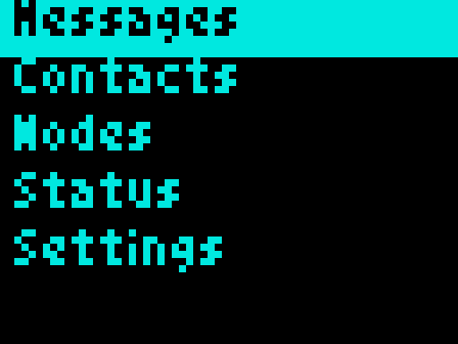
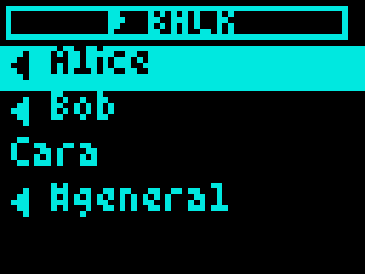
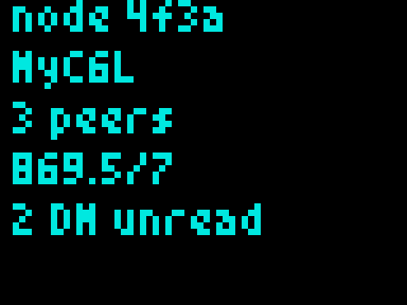
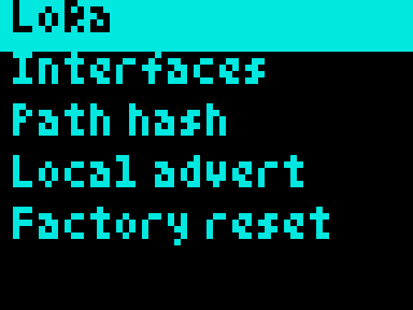
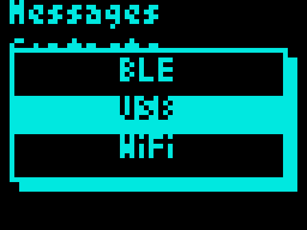

What this is
A hybrid companion firmware for the M5Stack Unit C6L: one image with BLE + USB + WiFi (pick Mode on the OLED), built on MeshCore (MIT).
Pinned MeshCore tag: companion-v1.17.1 (see COMPAT.json). Newer MeshCore may break patches. Other MeshCore roles (repeater, room server, …) are not shipped here.
As far as we know, this is the first companion OLED UX for the Unit C6L on MeshCore.
OLED UX
The panel is a monochrome SPI SSD1306 (64×48) using Adafruit Tom Thumb. Images below are 1-bit framebuffer renders of that font, nearest-neighbor scaled (no antialiasing). Cyan is for docs readability; the hardware is white-on-black.
First boot
Gesture help → radio preset → Mode (default USB) → quiet local advert → reboot → Menu.
Button
- Short press — next item
- Double-click — select / enter
- Long-hold — go back (progress over ~1 s; release early cancels)
- Triple-click — stealth
Screen blanks after ~30 s; a click while asleep wakes only.
Screens
Messages · Contacts · Nodes · Status · Settings.
- Settings: LoRa · Interfaces · Path hash · Local advert · Factory reset
- Interfaces: Mode (BLE/USB/WiFi) · BLE PIN · WiFi status · USB Debug





How it was done / what was used
- PlatformIO + MeshCore ESP32-C6 base
- Variant under
overlay/variants/m5stack_unit_c6l/(PI4IO expander, OLED UI modules) - SPI
SSD1306SPIDisplay(Adafruit SSD1306 + GFX) - Small
patches/for companion hooks (MyMesh favourites/factory, MultiSerial WiFi/USB Mode, NeoPixel USB traffic,esp_mac.h) - Not used: M5Unified, Meshtastic graphics stacks
Why MeshCore is not in this git history
This keeps board-specific / AI-assisted overlay work separate from MeshCore’s upstream tree. You clone MeshCore at the pinned tag; the setup script overlays files and applies patches. That avoids vendoring a full fork and makes it clearer when a new MeshCore release needs patch updates.
Prerequisites
gitesptool(if missing,./scripts/flash.shprintsbrew/apt/pipxinstall hints; it does not auto-sudo install)- USB data cable
- Unit C6L download mode: hold Reset ~3 s
- Rebuild only:
python3+ PlatformIO (pio)
Downloads / Releases
Prebuilt companion images for companion-v1.17.1:
m5stack_unit_c6l_companion-v1.17.1.bin— app only @0x10000m5stack_unit_c6l_companion-v1.17.1-merged.bin— full image @0x0
GitHub Release v1.17.1 (also checked into firmware/ in this repo).
Flash with the script (easiest)
git clone https://github.com/gillesbolland/meshcore-m5stack-unit-c6l.git cd meshcore-m5stack-unit-c6l ./scripts/flash.sh
Menu: Update (app @ 0x10000), Full (erase + merged @ 0x0), Erase only.
Download mode: hold Unit C6L Reset ~3s. Use a USB data cable.
Flash manually (esptool)
Always pass: --chip esp32c6 --flash-mode dio --flash-freq 80m --flash-size 4MB. If the device boot-loops after an app-only update, use the merged image at 0x0.
# Erase esptool --chip esp32c6 -p PORT erase-flash # Full install (merged) esptool --chip esp32c6 -p PORT write-flash \ --flash-mode dio --flash-freq 80m --flash-size 4MB \ 0x0 firmware/m5stack_unit_c6l_companion-v1.17.1-merged.bin # App-only update esptool --chip esp32c6 -p PORT write-flash \ --flash-mode dio --flash-freq 80m --flash-size 4MB \ 0x10000 firmware/m5stack_unit_c6l_companion-v1.17.1.bin
Replace PORT (e.g. /dev/cu.usbmodem1101).
WiFi configuration
The published prebuilt has WiFi Mode UI but no SSID baked in (WIFI_SSID is not set at compile time). Without rebuilding, WiFi Mode shows no SSID / not connected.
- Rebuild with credentials. Example PlatformIO flags (or
platformio.local.ini/ M5Burner build flags):-D WIFI_SSID='"YourNetwork"' -D WIFI_PWD='"YourPassword"' ; optional: -D TCP_PORT=5000
Add them under the companion env inoverlay/variants/m5stack_unit_c6l/platformio.ini, then run./scripts/setup-and-build.sh. - Flash the new companion image (
./scripts/flash.sh). - On device: Settings → Interfaces → Mode → WiFi (reboots).
- Open Settings → Interfaces → WiFi for
IP:port(default TCP 5000). - Connect a MeshCore companion app over TCP to that address.
- Optional: USB Debug keeps USB/CDC while Mode is BLE or WiFi.
Rebuild from source
./scripts/setup-and-build.sh
Needs git, python3, and PlatformIO (pio). Missing tools → printed install hints. Clones MeshCore at the pin into .build/MeshCore, rsyncs the variant, applies patches, builds the hybrid companion into firmware/.
Maintenance & community
I am not committing to heavy ongoing maintenance. There is no guaranteed roadmap or response time.
Forks are welcome. Pull requests and people who want to continue or take over development are welcome.